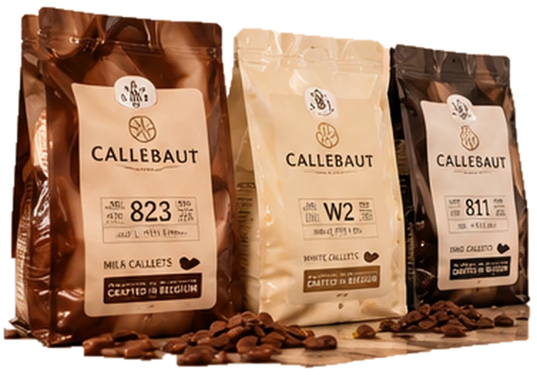
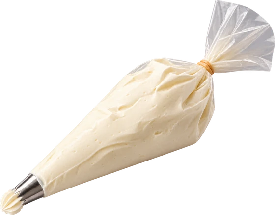
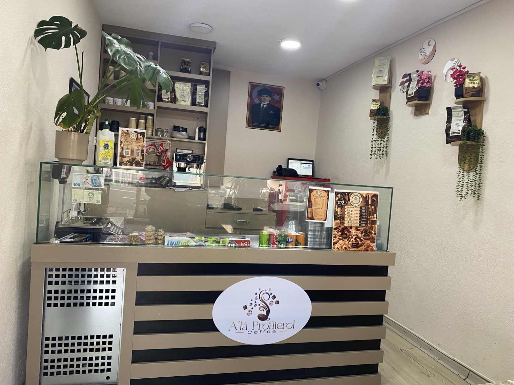

Ürünlerimizin hiçbirinde;
- Tatlandırıcı, glikoz, renklendirici ve koruyucu kullanılmaz.
- Trans yağ ve palm yağı kullanılmaz.
Her lokmada mutluluk
Günlük taze olarak hazırlanan profiterollerimiz, çikolata ve kahve keyfiyle buluşuyor.
Çikolata seçimimiz
Sütlü, beyaz ve bitter Callebaut çikolatalar, taze kremayla dolu profiterolün üzerine dökülür.
Özenle hazırlanır
Her gün taze hazırlanan hamur, her lokmada aynı lezzeti sunar.
En kaliteli malzemelerle, gerçek lezzet...




Gerçek malzemelerle, gerçek lezzet!
Gerçek malzemelerle, gerçek lezzet!
Ürün içerikleri ve üretim uygulamalarına ilişkin bilgiler, yayına alınmadan önce işletme tarafından teyit edilmelidir.
Not: Çeşitlere göre kullanım bilgileri işletme tarafından teyit edildiğinde bu açıklamalar kesinleştirilecektir.
A’lâ’nın özenle hazırlanan çikolatalı profiterol lezzetlerini keşfet.

Yumuşak iç kreması ve sütlü çikolata lezzeti.
Yoğun çikolata tadını sevenlere özel.
Beyaz çikolatanın kendine özgü lezzeti.
Beyaz ve sütlü çikolatanın bir araya geldiği lezzet.
Karamel bisküvi sosuyla farklı bir tatlı deneyimi.
Mekânımızdan ve günlük hazırlık sürecimizden görüntüler.



Gerçek ziyaretçi değerlendirmelerini Google işletme profilimizde inceleyebilirsiniz.
Profiterol · Kahve
Lezzet deneyimini paylaşan misafirlerimizin değerlendirmelerine göz atın.
Google yorumlarını görGoogle’daki güncel puan ve yorumlar doğrudan Google üzerinde görüntülenir.
Sevdiğin lezzetlere kullandığın sipariş platformundan ulaş.